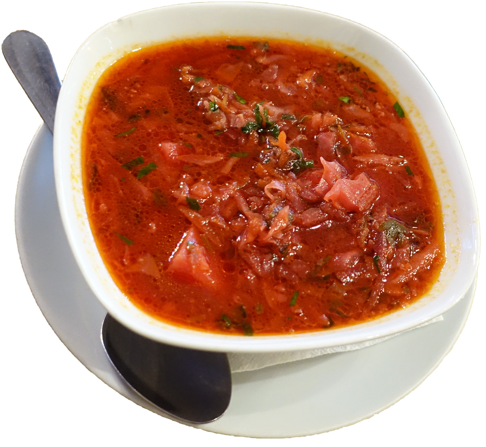

Borsch

Ingredients
- 900-1360g chuck
- 1 small head of cabbage
- 2 large beetroots
- 5 shredded carrots
- 1 large onion
- 175ml cup tomato purée
- 1 juiced lemon
- 2 tbsp. sugar
- 3 tbsp. chopped dill
- 6 minced cloves of garlic
- 3 large potatoes, peeled and cut
- Salt, red pepper flakes, sugar
Instructions
Time to prepare: <1 hour
- Step 1: Cut the meat into bite-size pieces and place it in a large pot.
- Step 2: Add cold water together with the meat and bring it to a boil. Leave about a litre of room at the top.
- Step 3: Peel the onions, beetroots, and carrots, and then shred them. Set them aside.
- Step 4: Cut up the potatoes into bite-size pieces.
- Step 5: Remove any scum that comes to the top of the soup. Keep removing it, and do not let it boil.
- Step 6: Add the potatoes, other vegetables, and tomato purée into the soup.
- Step 7: Add in some salt, pepper, sugar, and half a lemon's juice. Simmer the soup for 15 minutes.
- Step 8: In the meantime, slice up the cabbage. First, cut the head of the cabbage in half, then remove the core. Afterwards, slice it thinly using a sharp knife. Add this into the soup.
- Step 9: Add the chopped dill and garlic. Simmer the soup for another 15 minutes.
- Step 10: Once the cabbage becomes soft, taste the soup for the flavour. If necessary, add more lemon juice, pepper, sugar, and/or salt.
- Step 11: Best served with sour cream.
Enjoy your Borsch.